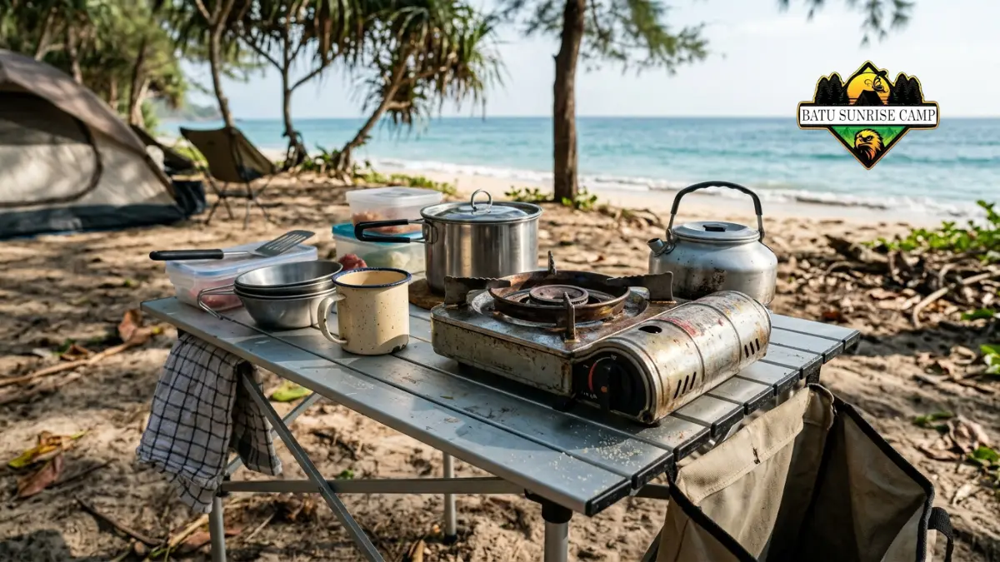

Perlengkapan camping di pantai yang wajib dibawa meliputi tenda tahan angin, air minum cukup, alat masak, penerangan, pertolongan pertama, pelindung cuaca, dan kantong sampah.
- Pilih tenda berbentuk aerodinamis dengan pasak panjang yang cocok untuk pasir.
- Hitung air minum dan air masak sejak awal, lalu tambahkan cadangan.
- Lindungi barang elektronik dan dokumen dari garam, pasir, dan kelembapan.
- Bawa kompor portabel, penerangan, dan perlengkapan pertolongan pertama.
- Siapkan kantong sampah agar seluruh limbah bisa dibawa pulang.
Tenda Seperti Apa yang Cocok untuk Camping di Pantai?
Tenda yang cocok berbentuk rendah dan aerodinamis, memiliki rangka kuat, flysheet kokoh, serta ventilasi cukup, dan dilengkapi pasak khusus untuk pasir.
Angin pantai sering datang dari arah yang berubah-ubah. Tenda tinggi dengan permukaan datar yang lebar mudah tertiup. Pilih desain kubah atau terowongan dengan rangka fleksibel dan banyak titik pengikat.
Ventilasi penting karena udara lembap dan hangat dapat memicu kondensasi. Tenda dengan dua lapisan dan lubang udara yang dapat disesuaikan membantu menjaga interior tetap nyaman.
Pasak biasa cenderung lepas di pasir. Gunakan pasak panjang berbentuk lebar atau pasak jenis sekrup.
Alternatifnya, ikat tali ke kantong yang diisi pasir lalu dikubur atau ke benda berat yang kokoh. Posisikan pintu membelakangi arah angin, dan jangan lupa membawa tali cadangan.
Berapa Banyak Air Minum yang Perlu Dibawa?
Rencanakan sekitar empat liter air per orang per hari untuk minum dan memasak, karena kebutuhan meningkat saat panas, trekking, dan aktivitas di pantai.
Angka Kecukupan Gizi (AKG) Kementerian Kesehatan RI tahun 2019, yang masih menjadi rujukan pada 2026, menyebut kebutuhan air orang dewasa sekitar 2,3 hingga 2,5 liter per hari.
Angka ini belum memperhitungkan panas, keringat, dan aktivitas fisik, serta belum mencakup air untuk memasak dan membersihkan alat.
Karena itu, membawa sekitar empat liter per orang per hari adalah patokan praktis yang aman. Sesuaikan dengan durasi, suhu, dan jarak trekking. Di lokasi tanpa sumber air, jangan mengandalkan air alam sebagai satu-satunya pasokan.
Jika ada sumber air tawar, saring dan masak sebelum diminum. Penyaring portabel atau tablet pemurni dapat membantu, tetapi bukan pengganti pasokan utama. Selalu bawa cadangan untuk satu hari tambahan.
Alat Masak dan Makanan Apa yang Praktis?
Alat masak praktis adalah kompor portabel, nesting ringan, korek tahan angin, serta makanan tahan lama yang mudah dimasak dan minim sampah.

Kompor portabel dan nesting cookware ringkas siap digunakan untuk memasak di pantai terpencil tanpa meninggalkan bekas arang.
Hindari membuat api unggun di sembarang tempat, karena kayu pesisir sering menjadi bagian ekosistem dan aturan setempat bisa melarangnya. Kompor portabel lebih aman, lebih efisien, dan tidak meninggalkan bekas arang.
Pilih makanan yang tidak mudah basi, seperti mi instan, nasi instan, makanan kaleng, oat, atau bahan kering. Kemas dalam wadah kedap agar tidak menarik serangga atau satwa. Simpan makanan jauh dari area tidur.
Bawa sabun cuci ramah lingkungan dalam jumlah kecil dan jangan mencuci peralatan langsung di laut atau sumber air. Buang air bekas cucian di titik yang jauh dari garis pantai dan sumber air, sesuai aturan setempat.
Bagaimana Melindungi Barang dari Garam, Pasir, dan Kelembapan?
Lindungi barang dengan kantong kedap air, wadah tertutup, dan penyimpanan di dalam tenda, lalu bilas peralatan logam dengan air tawar setelah pulang.
Garam dan kelembapan mempercepat karat serta merusak elektronik. Bungkus ponsel, kamera, pengisi daya, dan dokumen dalam kantong kedap air atau kotak tertutup. Silika gel dapat membantu menyerap kelembapan di dalam wadah.
Pasir cepat masuk ke ritsleting, sepatu, dan peralatan masak. Sediakan keset kecil di pintu tenda dan kantong terpisah untuk pakaian kotor. Letakkan barang-barang berharga Anda ke dalam tas, bukan dibiarkan tersebar di lantai tenda yang terbuka.
Setelah pulang, bilas tenda, pasak, dan peralatan logam dengan air tawar, lalu jemur sampai benar-benar kering sebelum disimpan. Langkah sederhana ini memperpanjang umur peralatan secara signifikan.
Pakaian dan Pelindung Apa yang Dibutuhkan?
Bawa pakaian cepat kering, jaket tahan angin, jas hujan, topi, kacamata, tabir surya, dan alas kaki yang cocok untuk jalur trekking serta pantai berbatu.
Cuaca pantai dapat berubah cepat. Siang hari terik, sedangkan malam bisa terasa dingin karena angin. Pakaian berlapis memudahkan Anda menyesuaikan diri tanpa membawa terlalu banyak.
Pilih bahan sintetis atau campuran yang cepat kering. Hindari pakaian katun tebal yang menyerap air dan lama kering. Bawalah satu rangkaian pakaian tidur khusus untuk mempertahankan kehangatan dan menjaga agar tetap kering.
Perlindungan matahari sering diabaikan. Topi lebar, kacamata, dan tabir surya mengurangi risiko sengatan matahari dan dehidrasi.
Alas kaki tertutup yang kuat memberikan perlindungan terhadap karang yang runcing, sementara sandal gunung sangat sesuai untuk wilayah berpasir dan perairan yang dangkal.
Perlengkapan Keselamatan dan Penerangan Apa yang Wajib Ada?
Perlengkapan wajib meliputi senter atau headlamp dengan baterai cadangan, perlengkapan pertolongan pertama, peluit, pengisi daya portabel, dan peta offline.
Headlamp membuat kedua tangan bebas saat mendirikan tenda atau memasak. Bawa baterai cadangan dan lampu tenda kecil untuk penerangan bersama.
Komposisi peralatan pertolongan pertama yang optimal hendaknya meliputi plester, kasa steril, cairan antiseptik, obat-obatan personal, analgesik umum, serta larutan elektrolit untuk menjaga keseimbangan cairan tubuh.
Sesuaikan dengan kebutuhan individu dan konsultasikan dengan tenaga kesehatan untuk obat yang rutin dikonsumsi.
Kami merekomendasikan untuk mempelajari prosedur keselamatan secara menyeluruh melalui panduan tips aman camping di pantai terpencil.
Bagaimana Menyusun Barang agar Ransel Tetap Ringan?
Susun barang berdasarkan prioritas, letakkan beban berat dekat punggung, pisahkan barang basah dan kering, serta hindari membawa benda yang tidak benar-benar dipakai.
Pisahkan kebutuhan menjadi kategori: tidur, masak, air, pakaian, keselamatan, dan sampah. Daftar sederhana membantu Anda memeriksa tidak ada barang penting yang tertinggal.
Letakkan benda berat seperti air dan makanan di tengah ransel dekat punggung agar keseimbangan terjaga. Barang yang sering dipakai, seperti jas hujan dan senter, ditaruh di bagian atas atau kantong luar.
Bagi beban dengan rekan satu kelompok. Seorang individu membawa tenda, sementara individu lainnya membawa kompor atau air. Pembagian ini mengurangi kelelahan pada jalur trekking. Panduan umum memilih lokasi tersedia di panduan lokasi camping pantai tersembunyi.
Kesimpulan
Perlengkapan camping di pantai harus menjawab tiga tantangan utama: angin, air, dan garam. Pilih tenda aerodinamis dengan pasak pasir, bawa sekitar empat liter air per orang per hari, dan lindungi barang dalam wadah kedap.
Lengkapi dengan kompor portabel, penerangan, pelindung cuaca, dan perlengkapan pertolongan pertama. Susun ransel secara cermat, bagi beban dengan rekan, dan bawa pulang semua sampah.

Pertanyaan Umum (FAQ)